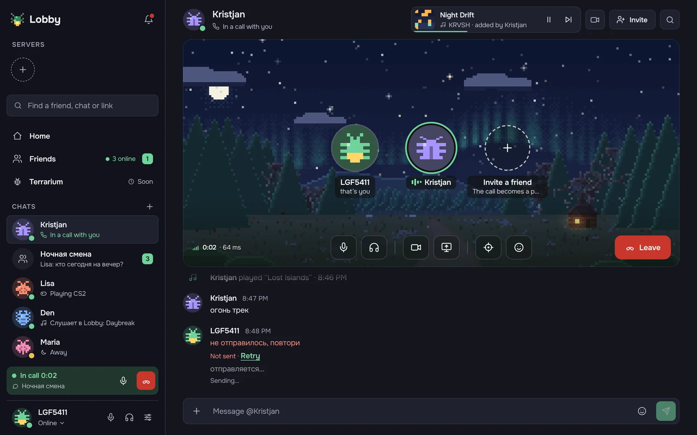
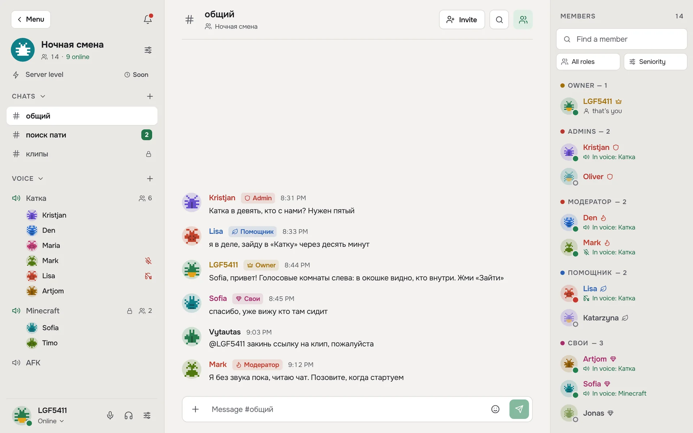
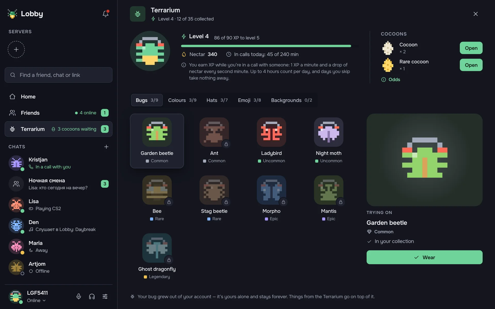

01Lobby· My own product · Windows app and browser
“Can we talk and still hear the same track?”
Lobby is a voice app for playing with friends: a Windows program and a browser version for calls by link. Everyone hears the same music, and it steps back the moment someone speaks.
- Role
- Idea, product decisions, UX, UI canvases, testing. Code written with Claude under my direction.
- When
- November 2026, ongoing
- Built with
- Design canvases, Svelte, Tauri, Rust voice engine, Supabase
- Status
- Version 0.14, in testing with friends
01The question
Voice in one app, music in another.
My friends and I play in the evenings from Ukraine, the Baltics and Finland. We talked in one program and each of us kept music in a different one. Nobody heard the same track, and when the music was loud, it fought with the voices.
I wanted one room where the call and the music belong together: put a track on for everyone, keep talking over it, and silence everything with one key when the round gets serious.
02What I decided
- 1
Music is synced, not streamed
Each person’s app plays the track itself. Lobby only sends “which track, which second, playing or paused”. No extra lag, nothing is rebroadcast, and when someone speaks, the music fades down by itself.
- 2
Clutch: one key, fifteen seconds of silence
In the decisive moment of a round one press mutes the music for everybody. It comes back on its own, so nobody has to remember to turn it on again.
- 3
Familiar, but ours
Early versions looked too much like Discord. I kept the layout people already know (friends on the left, conversation on the right) and made the call itself a pixel forest that follows your local time of day.
- 4
A link never switches your microphone on
A security review showed that a link from outside could drop a person into a room with the mic already live. Now any outside link stops at a Join button first.
- 5
The game gets the key press first
Hotkeys listen without intercepting, so a key bound in Lobby still works in the game. Side mouse buttons are supported.
- 6
Unfinished things stay visible
What is not ready keeps its place in the interface with a “Soon” label. I would rather show the plan than hide half the product.
03The screens




04In numbers
- 14 daysfrom the first call by link to version 0.14 (7 to 21 November 2026)
- 7interface languages: English, Estonian, Ukrainian, Russian, Polish, Latvian, Lithuanian
- 901automated tests passing on the last release
- ≈ 4 MBinstaller size. Lightness was a requirement from the start
These are facts about the build, not about users. Lobby is tested by a small group of friends, and I have no usage statistics worth showing yet.
05What I learned
A product is mostly decisions nobody sees.
When voice over WebRTC started to stutter, I had the delay measured and moved to our own engine and relay. When the build drifted from my drawings, I sent it back until it matched. Most of my time went into choices like these, not into screens.
I do not expect Lobby to become popular. I built it to go through the whole cycle once: idea, design, release, security review, feedback from real people, next version.